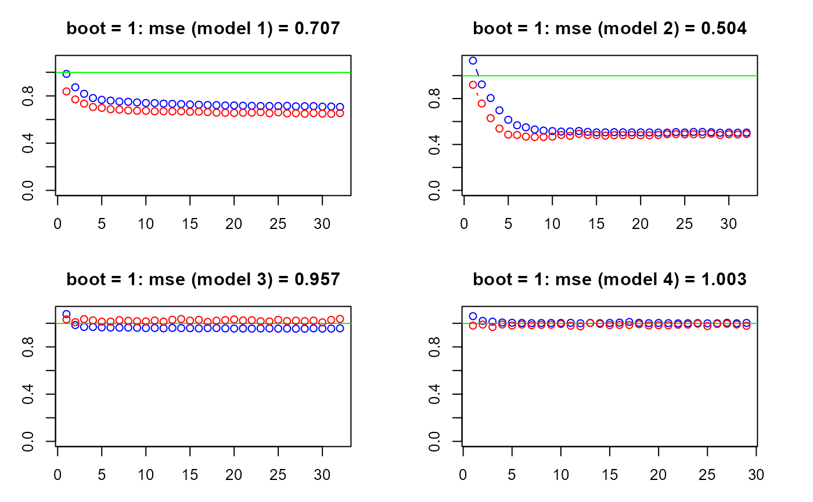
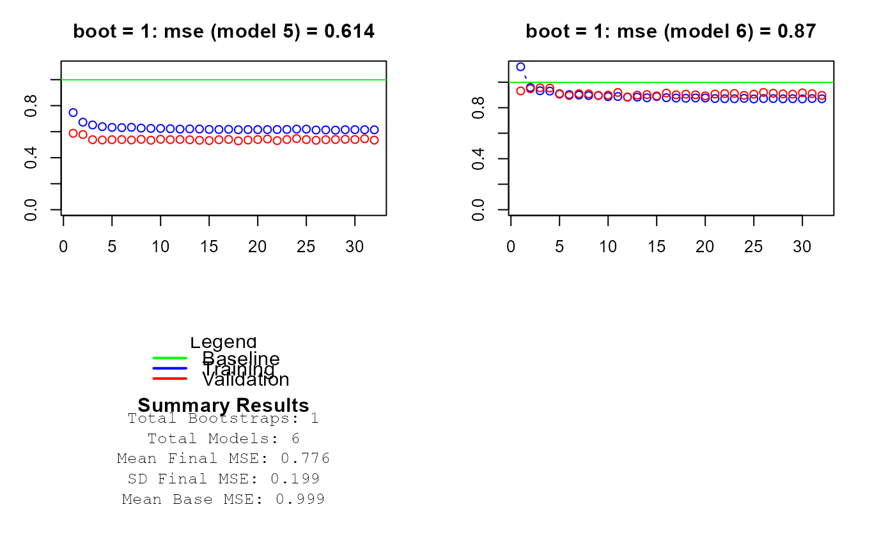

Display a (r,c) panel history plot from SEMdnn() output,
with x = number of epochs, y = training loss for each MLP model and bootstrap
sample, if nboot > 0.
Arguments
- object
A model fitting object from
SEMdnn()function.- size
number of the multiple plots (default,
size = NULL: all training MLP for each bootstrap sample are visualized).- r
number of rows of the plot layout (default,
r = 2).- c
number of columns of the plot layout (default,
c = 2).- ...
Currently ignored.
Details
The training history plot can provide an indication about the training of the model, such as: (i) its speed of convergence over epochs (slope), (ii) whether the model may have already converged (plateau of the line), (iii) whether the mode may be over-learning the training data (inflection for validation line), and more.
Author
Mario Grassi mario.grassi@unipv.it
Examples
# \donttest{
if (torch::torch_is_installed()){
# Load Sachs data (pkc)
ig<- sachs$graph
data<- sachs$pkc
data<- transformData(data)$data
group<- sachs$group
#...with train-test (0.5-0.5) samples
set.seed(123)
train<- sample(1:nrow(data), 0.5*nrow(data))
dnn <- SEMdnn(ig, data[train, ], algo = "layerwise",
hidden = 10, link = "relu", loss = "mse",
validation = 0.2, nboot = 0, epochs = 32)
tr <- trainingReport(dnn); tr
}
#> Conducting the nonparanormal transformation via shrunkun ECDF...done.
#> DAG conversion : TRUE
#> Running SEM model via DNN...
#> done.
#>
#> DNN solver ended normally after 192 iterations
#>
#> logL:-29.047206 srmr:0.23483


#> Boot Model Final_MSE Valid_MSE Base_MSE
#> 1 0 1 0.707 0.654 0.999
#> 2 0 2 0.504 0.491 0.999
#> 3 0 3 0.957 1.037 0.999
#> 4 0 4 1.003 0.979 0.999
#> 5 0 5 0.614 0.535 0.999
#> 6 0 6 0.870 0.896 0.999
# }